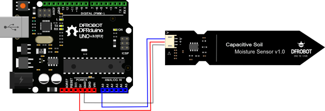

<!doctype html><html lang="ko"><meta charset="utf-8"><script type="module" src="https://unpkg.com/@wokwi/elements@1.9.2/dist/wokwi-elements.bundle.js"></script><style>@font-face{font-family:Pretendard;src:url('/assets/Pretendard-Regular.ttf')}body{margin:0;font-family:Pretendard,sans-serif;color:#16315f}.canvas{position:relative;width:1200px;height:760px;background:#fff;overflow:hidden}h1,p,svg{position:absolute;margin:0}h1{left:32px;top:24px;color:#315DAB;font-size:36px}p{font-size:27px}path{stroke:#315DAB;stroke-width:3;fill:none}circle{fill:#315DAB}text{fill:white;font-size:21px;font-weight:700}.name{fill:#17345d;font-size:24px}</style><main class="canvas"><h1>ESP32 DevKit v1 + DFRobot SEN0193</h1><p style="left:32px;top:85px">같은 번호의 핀끼리 연결</p><wokwi-esp32-devkit-v1 style="position:absolute;left:127.5px;top:110px;transform:scale(3);transform-origin:top left"></wokwi-esp32-devkit-v1><div style="position:absolute;left:650px;top:260px;width:520px;height:150px;overflow:hidden"></div><svg width="1200" height="760" aria-label="1번 D34와 Signal, 2번 3V3와 VCC, 3번 GND끼리 연결"><path d="M142.5,269.3 L75,269"/><circle cx="142.5" cy="269.3" r="5"/><circle cx="75" cy="269" r="16"/><text x="75" y="276" text-anchor="middle">1</text><text class="name" x="75" y="246" text-anchor="middle">D34</text><path d="M431.4,585.5 L505,630"/><circle cx="431.4" cy="585.5" r="5"/><circle cx="505" cy="630" r="16"/><text x="505" y="637" text-anchor="middle">2</text><text class="name" x="505" y="607" text-anchor="middle">3V3</text><path d="M431.4,557 L505,525"/><circle cx="431.4" cy="557" r="5"/><circle cx="505" cy="525" r="16"/><text x="505" y="532" text-anchor="middle">3</text><text class="name" x="505" y="502" text-anchor="middle">GND</text><path d="M658,288.8 L560,220"/><circle cx="658" cy="288.8" r="5"/><circle cx="560" cy="220" r="16"/><text x="560" y="227" text-anchor="middle">1</text><text class="name" x="560" y="197" text-anchor="middle">Signal</text><path d="M658,300 L560,300"/><circle cx="658" cy="300" r="5"/><circle cx="560" cy="300" r="16"/><text x="560" y="307" text-anchor="middle">2</text><text class="name" x="560" y="277" text-anchor="middle">VCC</text><path d="M658,311.2 L560,380"/><circle cx="658" cy="311.2" r="5"/><circle cx="560" cy="380" r="16"/><text x="560" y="387" text-anchor="middle">3</text><text class="name" x="560" y="357" text-anchor="middle">GND</text></svg><p style="left:650px;top:480px">전원 3.3 V · 신호 입력 GPIO34</p><p style="left:650px;top:532px">상단 회로와 커넥터는 마른 상태로</p><p style="left:650px;top:686px;font-size:20px">보드 도형 Wokwi · 센서 부품 그림 DFRobot</p></main></html>
